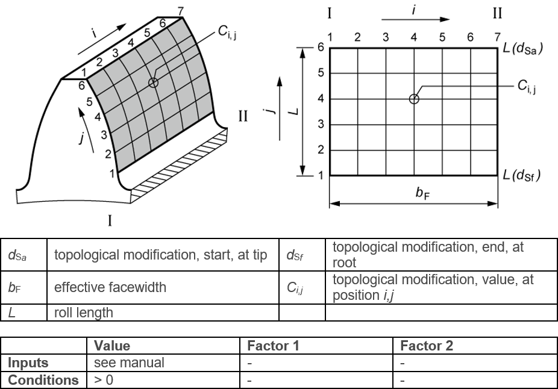

|
|
|


拓扑修改
使用拓扑修改来定义任何类型的修改。实际的修改在要导入的文件中描述。可在 dat 目录中的 "topological_template.dat" 文件中找到此类条目的示例。文件名称表明其用途。可在任何剖面中为任何轧制深度定义系数。当文件被导入时，这些系数会乘以在 Ca 下输入的值。为了显示和检查修改，请点击 。
你将在 \dat 目录中找到 Excel 文件 "Topological Crowning.xlsx"。在该文件中，你可以编辑定义拓扑修形的表格，然后将其复制到一个 .dat 文件中。此 Excel 文件还包含如何定义负齿廓鼓形的示例。

图 15.58：拓扑修改
Topological modification
Use topological modification to define any type of modification. The actual modification is described in the file that is to be imported. You will find an example of this type of entry in the "topological_template.dat" file in the dat directory. The file's name indicates its purpose. You can define coefficients in any section and for any rolling depth. When the file is imported, these coefficients are multiplied by the value input under Ca. To display and check the modification, click on .
You will find an Excel application, "Topological Crowning.xlsx", in the \dat directory. In that file, you can edit the table in which the topological modification is defined and then copy it to a .dat file. This Excel file also has an example of how to define a negative profile crowning.
Figure 15.58: Topological modification